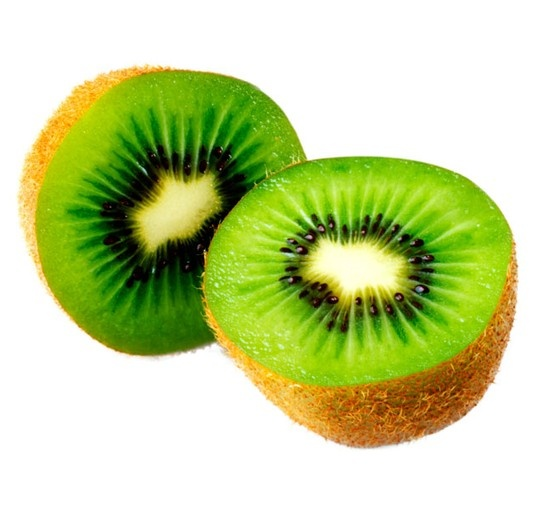
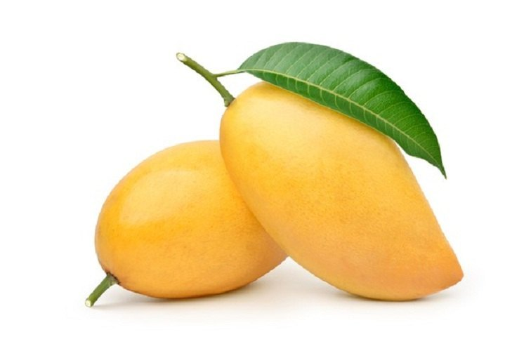

Fruits
Fruits are the means by which flowering plants (also known as angiosperms) disseminate their seeds. Edible fruits in particular have long propagated using the movements of humans and other animals in a symbiotic relationship that is the means for seed dispersal for the one group and nutrition for the other; in fact, humans and many other animals have become dependent on fruits as a source of food.[1] Consequently, fruits account for a substantial fraction of the world's agricultural output, and some (such as the apple and the pomegranate) have acquired extensive cultural and symbolic meanings.


